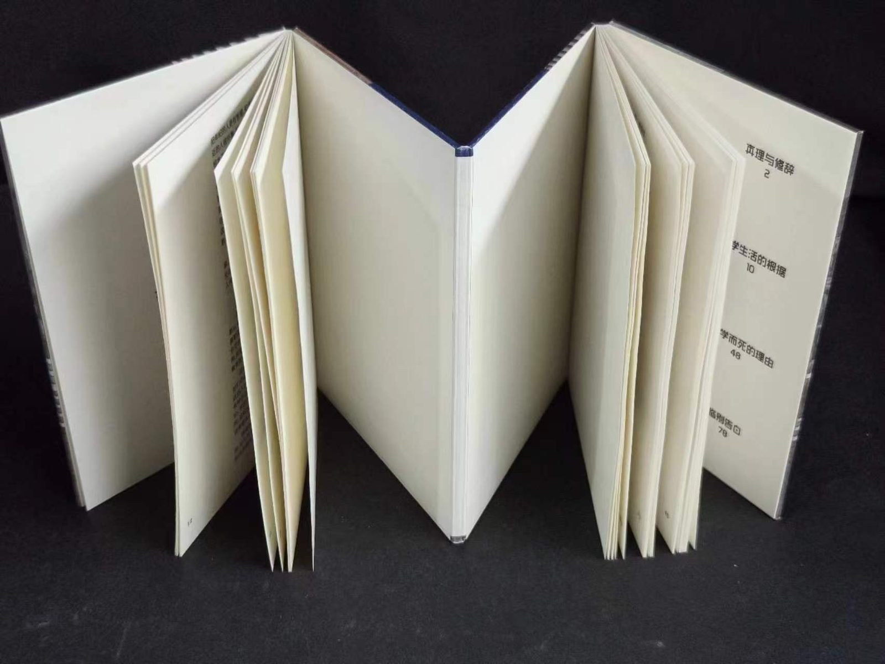
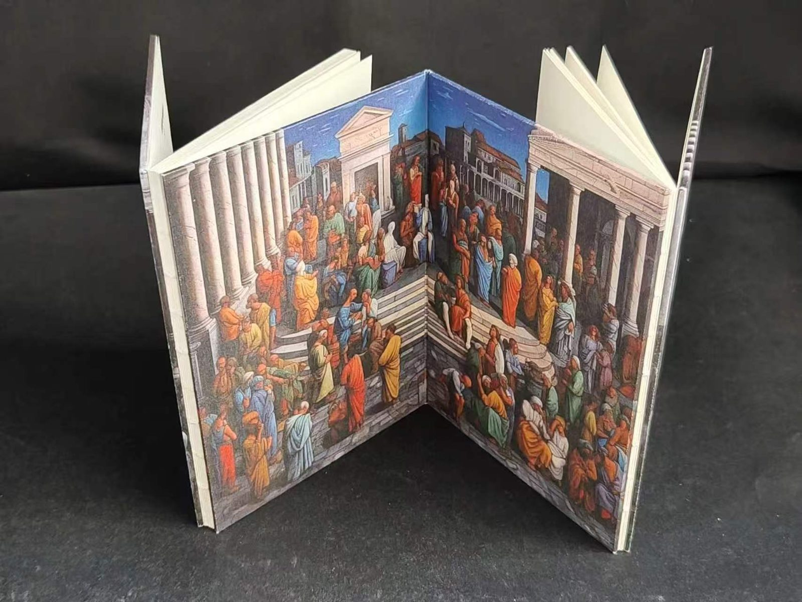
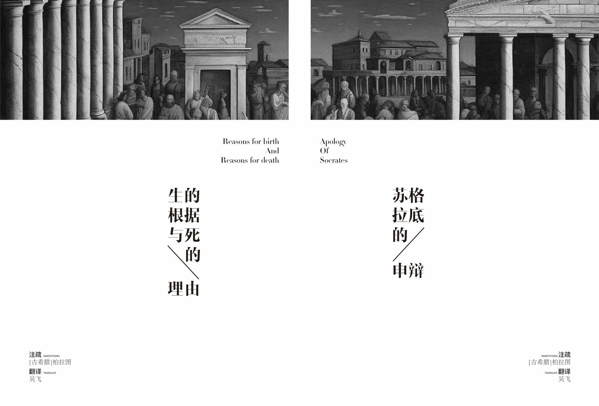
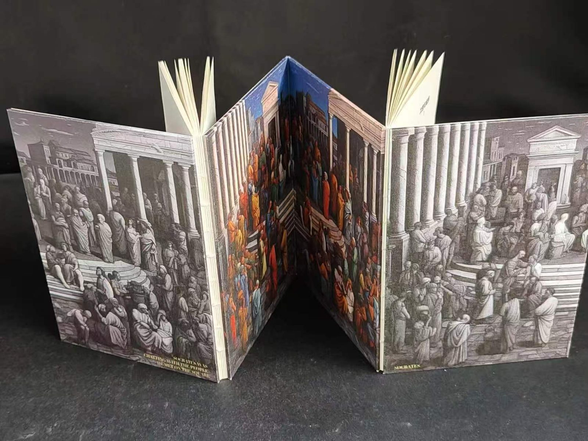

苏格拉底的申辩
书籍设计
SOCRATES' DEFENSE
围绕"申辩"这一核心命题，以克制的版式与留白处理，将哲学文本的思辨性转化为书籍的视觉节奏，从封面字体、内页排版到开本选择形成统一设计语言

设计说明
本设计以理性思辨、场域叙事为核心，紧扣《苏格拉底的申辩》文本内核，还原雅典法庭关于真理、死亡与哲学使命的辩论。设计跳出传统哲学书籍沉闷厚重的范式，将法庭审判现场作为空间概念融入书籍结构，以简约克制的视觉语言诠释古希腊思辨精神，使书籍成为文本的延伸载体，读者翻阅之时，便是步入审判现场、聆听申辩的过程。
书籍采用经折+锁线复合装帧，打破普通书籍的线性阅读模式。书籍完全展开后，内封长卷呈现古典主题壁画，还原古希腊集会场景；书页向两侧延展，模拟法庭空间，营造沉浸式阅读场域。书籍兼具双重形态：闭合时是可捧读的哲学读本；完全舒展则化作立体审判舞台，将文本中抽象的辩论场景实体化，呼应苏格拉底当众申辩的行为。




